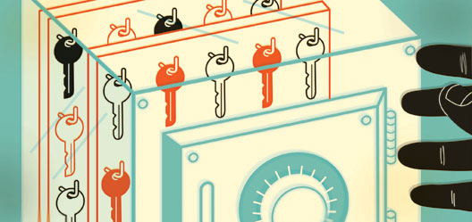

El secreto del FBI para hackear el Iphone
Posted by admin on 5th April 2016

El caso
<<<<<<< HEADEn las últimas fechas Apple enfrentó órdenes judiciales con motivo del desbloqueo del FBI propiedad de los atacantes de San Bernandino, sin embargo la agencia de seguridad consiguió el método para violar la seguridad de los dispositivos Iphone, abriendo la posibilidad de que cualquier teléfono pueda ser intervenido por el FBI (aunque si no logran mantener el secreto cualquiera lo podría hacer)
"Hemos logrado acceder exitosamente a la información guardada en el Iphone de Farook", fueron las declaraciones del departamento de Justicia EE.UU. terminando con la discusión con Apple acerca de la seguridad de sus dispositivos, a todo esto ¿Cómo es el sistema de segurida de Apple? A continuación te diremos qué sucede cuando intentas desbloquear un Iphone.
=======En las últimas fechas Apple enfrentó órdenes judiciales con motivo del desbloqueo del Iphone propiedad de los atacantes de San Bernandino, sin embargo la agencia de investigación consiguió el método para violar la seguridad de los dispositivos Iphone, abriendo la posibilidad de que cualquier teléfono pueda ser intervenido por el FBI (aunque si no logran mantener el secreto cualquiera lo podría hacer)
"Hemos logrado acceder exitosamente a la información guardada en el Iphone de Farook", fueron las declaraciones del departamento de Justicia EE.UU. terminando con la discusión con Apple acerca de la seguridad de sus dispositivos, a todo esto ¿Cómo es el sistema de segurida de Apple? A continuación te diremos qué sucede cuando intentas desbloquear in Iphone.
>>>>>>> origin/masterEncriptación 101
El código de seguridad en iOS no funciona simplemente como una contraseña, si así fuera este sería facilmente burlado por cualquier hacker experimentado ya que se podría copiar el contenido de la memoria flash y tener la información disponible para leer en algún otro dispositivo.
La seguridad de los Iphone y IPads empieza desde el proceso de fabricación donde dos códigos especiales son grabados dentro del hardware, el primero es un identificador del dispositivo y el segundo tiene que ver con el modelo. iOS utiliza estos códigos junto con un código aleatorio llamado entrophy para generar una llave criptográfica maestra, la cual es almacenada en una zona dedicada de la memoria. Incluso si tu contraseña no cambiase nunca este proceso asegura que se generen distintas llaves cada que restauras tu dispositivo.
Posteriormente cada archivo que es creado en el dispositivo sufre un proceso de encriptación, obteniendo archivos imposibles de leer sin la llave criptográfica. Cuando intentas desbloquear un Iphone el sistema te da la oportunidad de fallar 10 veces el código de seguridad tras lo cual la llave es borrada y toda la información contenida en el dispositivo se vuelve inservible.
Este sistema de seguridad es importante ya que es un proceso de bloqueo rápido (no necesita borrar cada archivo almacenado en la memoria flash) y ayuda a extender la vida de la memoria del dispositivo la cual puede ser re-escrita un número finito de veces antes de que empiece a fallar.
Si bien este esquema de seguridad sigue siendo vulnerable ya que la llave de encriptación podría ser leída diractamente en el hardware, es aquí donde entra en juego el código de bloqueo. Cuando el usuario genera dicho código, este sirve para generar una nueva llave criptográfica y ya que este código no es almacenado en el dispositivo la única forma de desencriptar la información sin ella es el uso de desbloqueo por fuerza bruta, lo que significa probar todos los códigos posibles hasta que encuentras el verdadero, sin embargo el número de intentos que tienes disponible hace imposible recurrir a este método ¿Ingenioso?.
Sin embargo el FBI ha conseguido burlar el mencionado sistema de seguridad el cual Apple se reusaba a desactivar ya que argumentaban que para hacerlo tendría que reescribir por completo el sistema operativo iOS, bueno, pues no fue así. Sin embargo el método que usaron para desbloquear el Iphone es hasta ahora un secreto, pudieron haber encontrado la manera de descifrar el algoritmo de criptografía, la historia nos ha demostrado que esto es posible (El caso de Enigma en la segunda guerra mundial), todo esto reaviva el debate de la seguridad en informática, recordemos que mucha de la información sensible para el usuario usa sistemas de encriptación, como la información de cuentas bancarias o sistemas de monedas como los Bitcoins, ¿Hasta dónde es posible confiar en estos sistemas?.
Post a comment